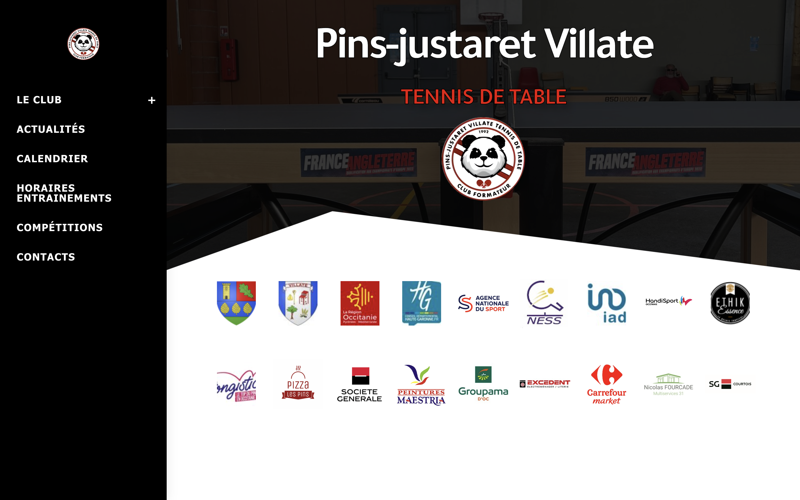

Site Internet du Club

Durant mon Service Civique, j'ai eu l'opportunité de participer à l'optimisation du site internet
de l'association. Ce travail impliquait la mise en place d'une structure claire,
l'amélioration de l'accessibilité et l'intégration de fonctionnalités permettant une meilleure
interaction avec les membres du club.
Programme pour la Gestion des Équipes

En plus du site internet, j'ai travaillé sur un logiciel, spécialement conçu, pour faciliter la gestion
des équipes lors des compétitions. Ce programme permet de gérer, efficacement, les équipes en fonction
de la cascade des points offrant ainsi un outil précieux pour les entraîneurs et les organisateurs.